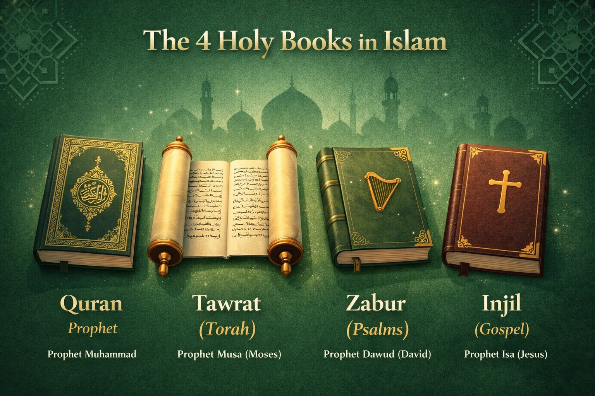

☪︎ 5 pillars of islam
Shahada
The declaration that there is no god but Allah, and Muhammad is His messenger.
Salah
The ritual prayer performed five times every day.
Fasting
Abstaining from food and drink from dawn until sunset during the holy month of Ramadan.
Zakat
Giving a fixed portion of one's wealth, typically 2.5%, to help people in need.
Hajj
Traveling to the holy city of Mecca at least once in a lifetime, if able.
The Five Daily Prayers
Fajr
الفجر
Time: Dawn → Sunrise
Fard: 2 Rak'ahs
Begins the day with the remembrance of Allah.
Dhuhr
الظهر
Time: Midday → Asr
Fard: 4 Rak'ahs
A reminder to pause from daily work and worship Allah.
Asr
العصر
Time: Afternoon → Sunset
Fard: 4 Rak'ahs
Encourages mindfulness of Allah before the day ends.
Maghrib
المغرب
Time: After Sunset
Fard: 3 Rak'ahs
Expresses gratitude to Allah as the sun sets.
Isha
العشاء
Time: Night → Dawn
Fard: 4 Rak'ahs
Ends the day with worship and seeking forgiveness.
Words of the Prophet Muhammad ﷺ
Helping Others
"Whoever relieves a believer of one of the hardships of this world, Allah will relieve him of one of the hardships on the Day of Resurrection. Whoever makes things easy for one who is in difficulty, Allah will make things easy for him in this world and the Hereafter. Allah continues to help the servant as long as the servant is helping his brother."
— Sahih Muslim (2699)Love & Mercy
"The example of the believers in their mutual love, mercy, and compassion is like that of one body. When one part of the body suffers, the whole body responds with sleeplessness and fever."
— Sahih al-Bukhari (6011), Sahih Muslim (2586)True Faith
"None of you truly believes until he loves for his brother what he loves for himself."
— Sahih al-Bukhari (13), Sahih Muslim (45)Mercy
"Whoever does not show mercy to people, Allah will not show mercy to him."
— Sahih al-Bukhari (7376), Sahih Muslim (2319)The Best People
"The most beloved people to Allah are those who are most beneficial to people."
— Al-Mu'jam al-Awsat by al-Ṭabarānī (Hasan)Charity
"Every act of kindness is charity. A good word is charity, helping your brother is charity, and removing something harmful from the road is charity."
— Based on Sahih al-Bukhari & Sahih MuslimContemporary Islamic Scholars
Learn from respected scholars who continue to teach the Qur'an, Sunnah, and the values of Islam.
Mufti Menk
A renowned Islamic scholar from Zimbabwe known for his inspiring lectures on faith, character, family, and personal development. His message emphasizes mercy, patience, and hope.
Dr. Omar Suleiman
An American Islamic scholar and educator recognized for his lectures on the Qur'an, Seerah, and Islamic history, encouraging Muslims to strengthen their faith and serve their communities.
Nouman Ali Khan
A teacher of Qur'anic Arabic and tafsir, known for making the meanings of the Qur'an accessible through practical lessons and engaging explanations.